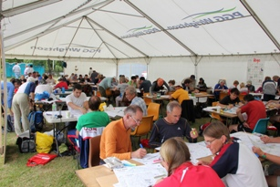
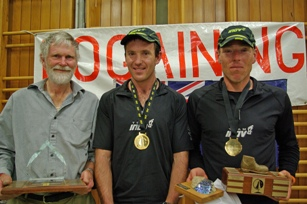
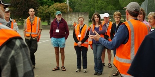

WRC2010 Wrapup Emma De Lacey |
Some Comments
"Thanks for a great event. Excellent course setting and organisation - definitely worthy of the world champs title". (Chris Forne – 1st Place)
"Firstly, a big thank you and congratulations on a superbly well organised WRC. We thoroughly enjoyed it and appreciate all your work". (Nicholas Mulder and Ryno Griesel, South Africa – 2nd Place)
"Just a quick note to say how wonderful I thought your event was – everything seemed to go so smoothly and the controls were fantastically placed and spot-on, each and every time." (Stephen John, NZ)

"Are you the mad people who are going to be running for 24 hours?” (Cheviot Coffee Shop)"We have had so many amazing comments from the community and parents about our catering effort and the event as a whole; I think it has been a fantastic team building exercise too." (Jenny - Chair of CAS Home and School)
"A great event and I think everyone witnessing it was impressed how a relatively small NZ rogaining community pulled off such a large event, had energy and resources available in case of any emergency, and even had spare rogainers to compete and win many of the prizes". (Neil Phillips, President IRF)
"Thanks to everyone for a great event. Rolf and I really enjoyed it and planning a good route was particularly challenging. Cheviot was a great location and the town made us feel really welcome. It was a huge undertaking and if there were any issues we never saw or heard about them as competitors which means the organising team did a fantastic job. I never want to cross another wobbly outriggered electric fence again". (Chris Howell, NZ)
"I have now returned home after the very pleasant trip to New Zealand from which me and my compatriots with whom travelled together have very good memories. Congratulations on a successful organisation of the 9WRC! Everything seemed to work out pretty well. The organisation worked very smoothly and there was a nice homely athmosphere. You managed to engage very well the local community and a large group of volunteers. If there were any troubles with the organisation these remained well hidden for the outsiders ;)" (Lauri Leppik, Estonia, IRF Technical Manager)
A Few Statistics
The competitors came from 22 different countries, with 1st, 2nd and 3rd from New Zealand, South Africa and Estonia mirroring the spread of rogaining around the world.

The winning team covered at least 140km and climbed a total of 6,500 metres of vertical ascent. They visited 75 of the 87 checkpoints (not counting the road crossings).521 competitors in 251 teams fronted on the day.
60% of teams stayed out for the whole 24 hours, or close to it.
Only 4 teams called for support with two of those suffering early symptoms of hypothermia. We are happy to say that St John only treated minor scrapes and blisters, otherwise.
Wrap up from the Organising Committee
We are unanimous in finding, after two years of preparation, that WRC2010 was a successful, rewarding and satisfying experience!
The local community support was fantastic. The farmers who made their land available went to endless trouble, such as helping to tape off hazards (a field full of roaring hinds). We couldn’t have done it without the use of the Cheviot Area School with the full support of the headmaster. The school committee organised the food and associated things like bringing in tables and chairs to the hall. They also organised the big marque which was loaned and erected by Pyne Gold Guiness.

We had so many volunteers that we had to turn some away. I am especially grateful to them for doing boring jobs like manning the security room so people could reclaim their bags when they would rather be at the finish watching everyone come in.I think the competitors would agree that we chose a very special area with beautiful rolling hills, streams, pockets of bush, forestry blocks, more rugged coastline and the most beautiful school grounds in New Zealand.
But we had to include a few challenges. For most people these were gorse, thistles, barbed wire and electric fences and THE WEATHER! This is the one thing we couldn’t control, but, as my daughter pointed out, it would favour the Kiwis over the Aussies! What do they know about rain? Well they did pretty well in spite of it, especially the Australian women!
Emma De Lacey
10th December 2010